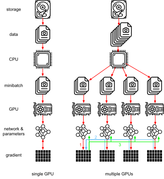
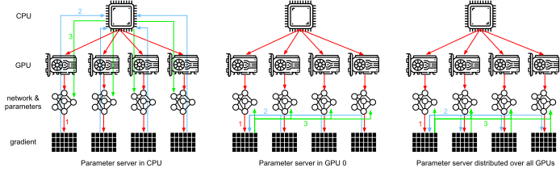
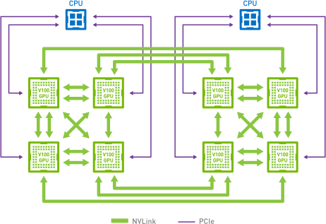
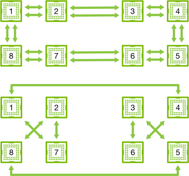
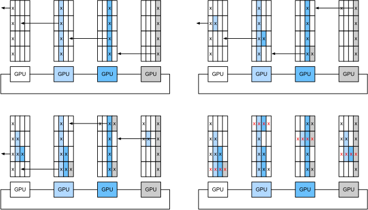
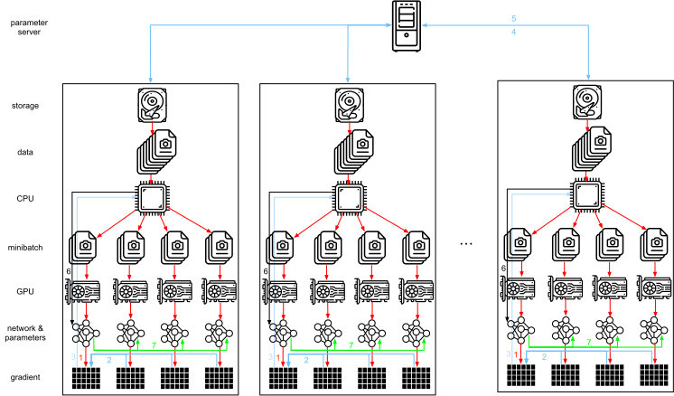
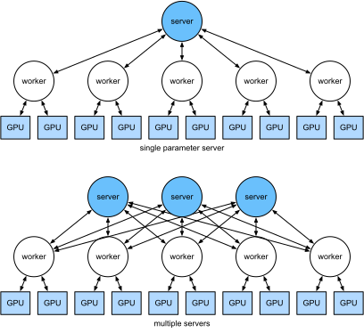

13.7. 参数服务器¶
当我们从单个 GPU 转向多个 GPU，再转向包含多个 GPU 的多台服务器——这些 GPU 可能分布在多个机架和网络交换机上—— 用于分布式和并行训练的算法就需要变得复杂得多。细节很重要，因为不同的互连方式具有截然不同的带宽（例如，在合适的设置下，NVLink 可以在 6 条链路上提供高达 100 GB/s 的带宽，PCIe 4.0（16 通道）提供 32 GB/s，而即便是高速的 100GbE 以太网也只能达到 10 GB/s）。与此同时，期望一位统计建模者同时成为网络和系统方面的专家是不合理的。
参数服务器（parameter server）的核心思想是由 Smola and Narayanamurthy (2010) 在分布式潜在变量模型的背景下引入的。随后，Ahmed et al. (2012) 给出了推送（push）和拉取（pull）语义的描述，Li et al. (2014) 则描述了一个系统及一个开源库。下面我们将说明提升效率所需的各个组件。
13.7.1. 数据并行训练¶
让我们回顾用于分布式训练的数据并行训练方法。本节中我们将只使用这一方法，因为它在实际中实现起来要简单得多。由于如今 GPU 拥有充足的内存，除了图上的深度学习之外，几乎不存在更适合其他并行策略的用例。图13.7.1 描述了我们在 13.5节 中实现的数据并行变体。其关键之处在于，梯度的聚合在单个 GPU（GPU 0）上进行，然后更新后的参数被重新广播到所有 GPU。

图13.7.1 左图：单 GPU 训练。右图：多 GPU 训练的一种变体：(1) 我们计算损失和梯度，(2) 所有梯度在一个 GPU 上聚合，(3) 进行参数更新，并把参数重新分发到所有 GPU。¶
回过头来看，在 GPU 0 上聚合这一决定似乎相当随意。毕竟，我们完全可以在 CPU 上聚合。事实上，我们甚至可以决定把一部分参数放在一个 GPU 上聚合，把另一部分放在另一个 GPU 上聚合。只要优化算法支持这种做法，就没有理由说我们不能这样做。例如，如果有四个参数向量，对应的梯度分别为 \(\mathbf{g}_1, \ldots, \mathbf{g}_4\)，我们可以为每个 \(\mathbf{g}_i\)（\(i = 1, \ldots, 4\)）在一个 GPU 上聚合其梯度。
这种推理显得随意而轻率。毕竟，从数学上讲整个过程都是一样的。然而，我们面对的是真实的物理硬件，其中不同总线的带宽不同，正如 13.4节 中所讨论的那样。 考虑一个如 图13.7.2 所述的真实 4 路 GPU 服务器。如果它的连接特别好，可能会有一块 100 GbE 网卡。更典型的数字在 1–10 GbE 范围内，有效带宽为 100 MB/s 到 1 GB/s。 由于 CPU 的 PCIe 通道太少，无法直接连接到所有 GPU（例如，消费级 Intel CPU 有 24 条通道），我们需要一个多路复用器。在 16x Gen3 链路上，来自 CPU 的带宽是 16 GB/s。这也是每块 GPU 连接到交换机的速度。这意味着在设备之间直接通信更为有效。
图13.7.2 一个 4 路 GPU 服务器。¶
为了便于讨论，假设梯度有 160 MB。在这种情况下，把梯度从其余 3 块 GPU 发送到第 4 块 GPU 需要 30 ms（每次传输需要 10 ms = 160 MB / 16 GB/s）。再加上 30 ms 把权重向量传回去，总共需要 60 ms。 如果我们把所有数据发送到 CPU，则会带来 40 ms 的额外开销，因为四块 GPU 每块都需要把数据发送到 CPU，总计 80 ms。最后，假设我们能够把梯度分成 4 个各 40 MB 的部分。现在我们可以同时在不同的 GPU 上聚合每个部分，因为 PCIe 交换机在所有链路之间提供全带宽操作。这样只需要 7.5 ms 而不是 30 ms，一次同步操作总共需要 15 ms。简而言之，取决于我们如何同步参数，同样的操作可能耗时 15 ms 到 80 ms。图13.7.3 描绘了交换参数的不同策略。

图13.7.3 参数同步策略。¶
请注意，在提高性能方面我们还有另一个可用的工具：在深度网络中，从上到下计算所有梯度需要一些时间。我们可以在仍在忙着计算某些参数组的梯度时，就开始同步另一些参数组的梯度。关于如何在 Horovod 中做到这一点，请参见 Sergeev and Del Balso (2018)。
13.7.2. 环同步¶
在现代深度学习硬件上进行同步时，我们经常会遇到非常定制的网络连接。例如，AWS p3.16xlarge 和 NVIDIA DGX-2 实例共享 图13.7.4 中的连接结构。每块 GPU 通过一条 PCIe 链路连接到主机 CPU，该链路的工作速度最高为 16 GB/s。此外，每块 GPU 还有 6 条 NVLink 连接，每条连接都能以 300 Gbit/s 的速度双向传输。这相当于每条链路每个方向约 18 GB/s。简而言之，NVLink 的聚合带宽显著高于 PCIe 带宽。问题在于如何最有效地利用它。

图13.7.4 8 台 V100 GPU 服务器上的 NVLink 连接（图片由 NVIDIA 提供）。¶
事实证明，最优的同步策略是把网络分解为两个环，并利用它们直接同步数据 (Wang et al., 2018)。图13.7.5 表明，网络可以分解为一个具有双倍 NVLink 带宽的环（1-2-3-4-5-6-7-8-1）和一个具有常规带宽的环（1-4-6-3-5-8-2-7-1）。在这种情况下设计一个高效的同步协议并非易事。

图13.7.5 把 NVLink 网络分解为两个环。¶
考虑下面这个思维实验：给定一个由 \(n\) 个计算节点（或 GPU）组成的环，我们可以把梯度从第一个节点发送到第二个节点。在第二个节点上，它被加到本地梯度上，然后继续发送到第三个节点，依此类推。经过 \(n-1\) 步之后，聚合后的梯度就可以在最后访问的节点上找到。也就是说，聚合梯度的时间随节点数量线性增长。但如果这样做，算法的效率相当低。毕竟，在任何时刻都只有一个节点在通信。如果我们把梯度分成 \(n\) 个块，并从节点 \(i\) 开始同步第 \(i\) 块，会怎么样呢？ 由于每个块的大小为 \(1/n\)，现在总时间为 \((n-1)/n \approx 1\)。换句话说，聚合梯度所花费的时间并不会随着环的规模增大而增长。这是一个相当惊人的结果。图13.7.6 展示了在 \(n=4\) 个节点上的操作序列。

图13.7.6 跨 4 个节点的环同步。每个节点开始向其左邻居发送部分梯度，直到在其右邻居中找到组装好的梯度。¶
如果我们用同样的例子，在 8 块 V100 GPU 上同步 160 MB 的数据，大约需要 \(2 \cdot 160 \textrm{MB} / (3 \cdot 18 \textrm{GB/s}) \approx 6 \textrm{ms}\)。尽管我们现在使用了 8 块 GPU，这仍然比使用 PCIe 总线更好。请注意，在实践中这些数字会稍差一些，因为深度学习框架往往无法把通信组合成大的突发传输。
注意，有一种常见的误解认为环同步（ring synchronization）与其他同步算法在本质上是不同的。实际上，与简单的树结构相比，其唯一区别在于同步路径稍微精细一些。
13.7.3. 多机训练¶
在多台机器上进行分布式训练带来了另一个挑战：我们需要与一些服务器通信，而这些服务器之间仅通过带宽相对较低的网络结构相连，在某些情况下可能慢一个数量级以上。 跨设备同步很棘手。毕竟，运行训练代码的不同机器会有细微的速度差异。因此，如果我们想使用同步分布式优化，就需要同步它们。图13.7.7 展示了分布式并行训练是如何进行的。
每台机器读取（不同的）一批数据，把它拆分到多个 GPU 上，并传输到 GPU 内存。在那里，预测和梯度分别基于每个 GPU 上的批量计算。
来自所有本地 GPU 的梯度在一个 GPU 上聚合（或者其中一部分在不同的 GPU 上聚合）。
梯度被发送到 CPU。
CPU 把梯度发送到中央参数服务器，由它聚合所有梯度。
然后用聚合后的梯度更新参数，更新后的参数被广播回各个 CPU。
这些信息被发送到一块（或多块）GPU。
更新后的参数被分发到所有 GPU 上。

图13.7.7 多机多 GPU 分布式并行训练。¶
这些操作中的每一个看起来都相当直接。而且事实上，它们可以在一台机器内部高效地执行。 然而，一旦考察多台机器，我们就会发现中央参数服务器成了瓶颈。毕竟，每台服务器的带宽是有限的，因此对于 \(m\) 个工作节点来说，把所有梯度发送到服务器所需的时间为 \(\mathcal{O}(m)\)。我们可以通过把服务器数量增加到 \(n\) 来突破这一障碍。此时每台服务器只需要存储 \(\mathcal{O}(1/n)\) 的参数，因此更新和优化的总时间变为 \(\mathcal{O}(m/n)\)。 让这两个数字相匹配，就能得到恒定的扩展性，而与我们处理多少个工作节点无关。在实践中，我们把同一批机器同时用作工作节点和服务器。图13.7.8 展示了这种设计（细节另见 (Li et al., 2014)）。 特别地，确保多台机器在没有不合理延迟的情况下协同工作并非易事。

图13.7.8 上图：单个参数服务器由于带宽有限而成为瓶颈。下图：多个参数服务器利用聚合带宽存储部分参数。¶
13.7.4. 键值存储¶
在实际中实现分布式多 GPU 训练所需的各个步骤并非易事。 这就是为什么值得采用一种通用的抽象，即带有重新定义更新语义的键值存储（key–value store）。
在许多工作节点和许多 GPU 上，梯度 \(i\) 的计算可以定义为
其中 \(\mathbf{g}_{ijk}\) 是梯度 \(i\) 在工作节点 \(k\) 的 GPU \(j\) 上拆分出来的一部分。 这一操作的关键之处在于它是一种可交换归约（commutative reduction），也就是说，它把许多向量变成一个，而运算的应用顺序无关紧要。这对我们的目的来说非常好，因为我们并不（需要）细粒度地控制何时收到哪个梯度。此外，请注意该操作在不同的 \(i\) 之间是独立的。
这使我们能够定义以下两种操作：推送（push）累积梯度，拉取（pull）获取聚合后的梯度。由于我们有许多不同的梯度集合（毕竟我们有许多层），需要用键 \(i\) 来索引梯度。这与键值存储（例如 Dynamo 中引入的键值存储 (DeCandia et al., 2007)）的相似性并非巧合。它们也满足许多相似的特征，特别是在把参数分布到多台服务器上的时候。
键值存储的推送和拉取操作描述如下：
push(key, value) 把一个特定的梯度（值）从工作节点发送到公共存储。在那里，该值被聚合，例如通过求和来聚合。
pull(key, value) 从公共存储中获取聚合后的值，例如在合并来自所有工作节点的梯度之后。
通过把同步方面的全部复杂性隐藏在简单的推送和拉取操作之后，我们可以把两类人的关注点解耦：一类是希望用简单的方式表达优化的统计建模者，另一类是需要应对分布式同步固有复杂性的系统工程师。
13.7.5. 小结¶
同步需要高度适应服务器内部特定的网络基础设施和连接方式。这会使同步所需的时间产生显著差异。
环同步对于 p3 和 DGX-2 服务器可能是最优的。对于其他服务器则未必如此。
当为了增加带宽而添加多个参数服务器时，分层同步策略效果良好。
13.7.6. 练习¶
你能进一步提高环同步的性能吗？提示：你可以双向发送消息。
是否可能允许异步通信（在计算仍在进行时）？它如何影响性能？
如果在长时间运行的计算中丢失了一台服务器会怎样？我们如何设计一种容错（fault tolerance）机制，以避免完全重新开始计算？